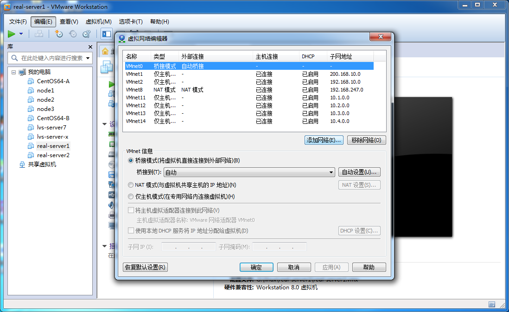

实现原理图：
准备工作
该练习需要三个主机（本人使用的是CentOS6.4版本操作系统），可以通过虚拟机克隆技术克隆另外两个主机，当然，克隆完之后记得更改主机名，便于操作与识别。一台充当LVS服务器（lvs-server:（单网卡：eth0:200.168.10.1））另外两台真实服务器（real-server1（单网卡：200.168.10.2）、real-server2（单网卡：：200.168.10.3））
（1） 添加虚拟网络VMnet1，设置网段：200.168.10.0 ，子网掩码：255.255.255.0；

（2） vmnet1 win7下设置IP为：200.168.10.4，netmask：255.255.255.0，不需要指定网关
（3） 在Lvsserver安装软件ipvsadm（此步可以提前，需要在NAT网络连接模式开启）：
yum -y install ipvsadm*
（4）使用vmnet1（模拟外网），除了vmnet1之外，其它网络全部关掉（否则有可能会对实验结果造成影响，记住，是有可能！）
开始配置
1、配置IP （均使用vmnet1网段）
（1）lvsserver: 配置临时ip(本实验为临时测试)
ifconfig eth0 200.168.10.1 netmask 255.255.255.0
（2）real-server1 配置临时ip:
ifconfig eth0 200.168.10.2
（3）real-server2 配置临时ip:
ifconfig eth0 200.168.10.3
2、依次检查防火墙（lvs-server, real-server1,real-server2）
iptables-L -n (iptables)
sestatus(selinux)
3、在lvs-server上开启路由管道
echo 1 > /proc/sys/net/ipv4/ip_forward
4、lvs-server配置
（1）配置 dr server
ipvsadm-C
ipvsadm-At 200.168.10.10:80 -s rr
ipvsadm-at 200.168.10.10:80 -r 200.168.10.2:80 -g
ipvsadm-at 200.168.10.10:80 -r 200.168.10.3:80 -g
ipvsadm-L –n
（2）DR服务器配置虚拟IP并添加路由
1) ifconfig lo:0 200.168.10.10 netmask 255.255.255.255 up
2) route add -host 200.168.10.10 dev lo:0
5、分别配置两个真实服务器real-server1,real-server2
ifconfig lo:0 200.168.10.10 netmask255.255.255.255 up
route add -host 200.168.10.10 dev lo:0
route -n （查看:real-server2为例）

两台服务器继续配置：
echo 1 >/proc/sys/net/ipv4/conf/lo/arp_ignore
echo 2 >/proc/sys/net/ipv4/conf/lo/arp_announce
echo 1 >/proc/sys/net/ipv4/conf/all/arp_ignore
echo 2 >/proc/sys/net/ipv4/conf/all/arp_announce
6、添加HTML用于测试显示
（1) 在real-server1设置
service httpd restart
cd /var/www/html/
echo “<h1> <font color=’red’>lvs之dr：200.168.10.2 </font> </h1>” > index.html
（2)在real-server2设置
service httpd restart
cd /var/www/html/
echo “<h1> <font color=’blue’>lvs之dr：200.168.10.3 </font> </h1>” > index.html
测试
打开Windows浏览器，在地址栏输入200.168.10.10,回车，显示内容为下图
或者
当点击刷新按钮时会显示另外一个网页。
完毕！谢谢浏览！